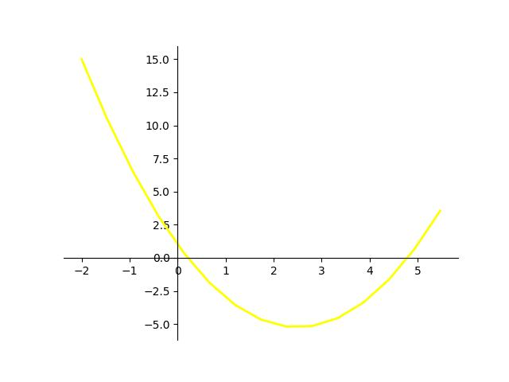

Функция:
f(x)
y(x)
z(x)
Начало интервала:
Конец интервала:
Количество значений:
y(x) = x
2
- 5x + 1
x
f(x)
-2.0
15.0
-1.4667
10.4847
-0.9333
6.5375
-0.4
3.16
0.1333
0.3513
0.6667
-1.889
1.2
-3.56
1.7333
-4.6622
2.2667
-5.1956
2.8
-5.16
3.3333
-4.5556
3.8667
-3.3821
4.4
-1.64
4.9333
0.6709
5.4667
3.5513
